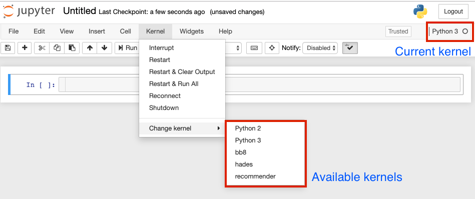
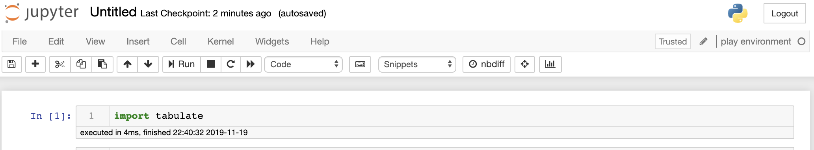
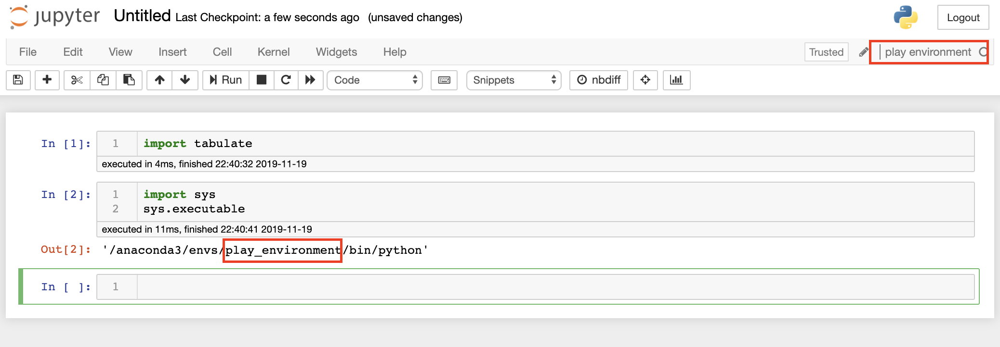

In the article "Save the environment with conda", we gave a brief overview of how environments allowed other people to use your programs, and allowed you to manage potentially conflicting depedendices for different packages.
In Jupyter, the different environments are referred to as "kernels". Each notebook has a kernel associated with it, which tells me when I run a notebook which Python environment to use. The kernel being used is in the upper right-hand corner of a Jupyter notebook (it defaults to Python 2 or Python 3 if you just use the base environments). You can choose the environment from the Kernel menu, as shown in the screenshot below.

Before a kernel appears in drop-down list of kernels, you have to register it. This process sometimes goes wrong; this article shows how to fix it.
Quick start guide to creating an environment
Let's create an environment and a kernel. We will start with the packages jupyter, pandas, and tabulate. I have chosen tabulate because it is pretty rare someone has this installed on their base python installation, so a quick-and-dirty check to see we are in the right environment will be to try and import tabulate. We will call this kernel "play environment".
In the terminal, run
# create the new environment without asking for confirmation
$ conda create --name play_environment pandas jupyter ipykernel tabulate -y
# activate the environment
$ conda activate play_environment
# use ipykernel to register your new environment as a kernel named
# play environment
(play_environment) $ python -m ipykernel install --user --name play_environment --display-name "play environment"
If this works, you should be able to launch Jupyter from any terminal, and from the kernel drop down list, select "play environment".
What might go wrong?
Often, everything will run to this point, but the kernel "play environment" might point to another environment. We can check this by trying to import tabulate:

Of course, checking a random package isn't the most reliable way of determining whether we are in the right kernel or not! A better way is use the sys module to ask which Python we are using. We can use print(sys.executable) in any cell to see which Python our system is actually working with. In an ideal world, it will be something like ~/anaconda3/envs/play_environment/bin/python, which tells you that the kernel is connected to the right environment (note that older versions of Anaconda will have the directory starting at the system root rather than your home directory).

Sometimes, we will see a different Python version here. When we install packages in play_environment on the terminal, Jupyter won't be able to see them.
The fix
A kernel is connected to an environment via a kernel specification file called kernel.json. We can find this file using the terminal command jupyter kernelspec list, which will tell you where the kernel specification lives. On my system I get
$ jupyter kernelspec list
Available kernels:
blog_env /Users/damien/Library/Jupyter/kernels/blog_env
grading /Users/damien/Library/Jupyter/kernels/grading
myenv /Users/damien/Library/Jupyter/kernels/myenv
play_environment /Users/damien/Library/Jupyter/kernels/play_environment
prohet_env /Users/damien/Library/Jupyter/kernels/prohet_env
python3 /Users/damien/Library/Jupyter/kernels/python3
Let's look at the play_environment kernel specification file. It can happen that the kernel specification has the wrong version of Python (I haven't been able to tell when this occurs).
# Replace this path with the output from your jupyter kernelspec list command
$ cat /Users/damien/Library/Jupyter/kernels/play_environment/kernel.json
{
"argv": [
"/anaconda3/envs/python3/bin/python",
"-m",
"ipykernel_launcher",
"-f",
"{connection_file}"
],
"display_name": "play environment",
"language": "python"
}
Note the first entry under "argv" is "/anaconda3/envs/python3/bin/python", which is the python3 environment. We just need to edit this file to be "/anaconda3/envs/play_environment/bin/python". In general, the first entry of "argv" should be <directory from "jupyter kernelspec list" for your environment>/bin/python.
Once you have made this change, you can restart Jupyter, and your kernel will be launched in the environment you expect.
Summary
Above we showed what the issue is and how to diagnose it. Here we include a short list of steps for what you should do when you create a new environment. Replace <env_name> with the name of the environment you want to create.
-
Create your environment with
conda create --name <env_name> <list of packages you want to install>.
Includejupyterandipykernelin the list of packages. -
Activate your newly created environment with
conda activate <env_name> -
Find the name of your Python executable using
which python.
On my system, this is/Users/damienmartin/anaconda3/envs/<env_name>/bin/python. We will use this in step 6. -
Create the kernel for Jupyter with
python -m ipykernel install --user --name <env_name> --display_name "<env_name>" -
Locate the kernel file with
jupyter kernelspec listFor me, the kernel specification file is in~/Library/Jupyter/kernels/<env_name>, but this command will tell you what it is on your system. -
In your favorite editor (e.g. atom, vim, VS Code), open the
kernel.jsonfile from the directory you found in step 4.
On my system, I would open ~/Library/Jupyter/kernels/<env_name>/kernel.json. Make sure the first thing in the "argv" entry points to your environment's version of Python (found in step 3).
Now when you launch Python, you can select the <env_name> kernel to launch the env_name environment!
Related articles
- "Save the environment with conda" goes into a lot more detail about why we would want to use environments. This article should be unnecessary, and I hope it will be once the Jupyter kernel installation becomes more robust.